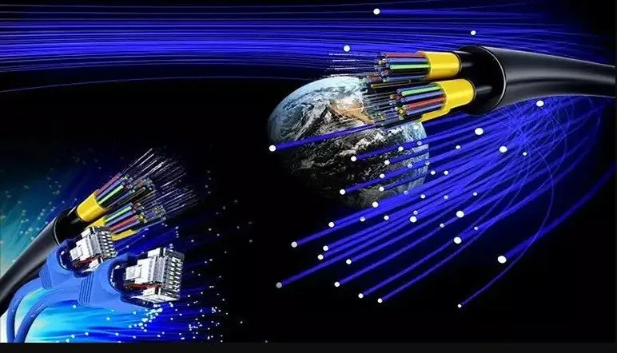
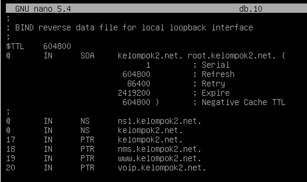

ROUTING SKEMA FIBER OPTIC
Tanggal: 10 Mei 2024

Hai, pada project kali ini saya bersama dengan kelompok saya membuat sebuah Routing Skema FO. Routing Skema FO ini sama saja seperti kita routing menggunakan kabel UTP, namun pada project ini kita menggunakan kabel FO dalam melakukan routing. Dalam hal ini kita diminta untuk membuat sebuah jaringan local agar gedung pajajaran dan siliwangi bisa saling terhubung. Dengan menggunakan kabel FO untuk routing, kita dapat mencapai kecepatan peneransferan data yang tinggi. Tenetu Kabel FO memiliki kapasitas transmisi yang jauh lebih besar daripada kabel UTP dan dapat menstabil koneksi.
Dalam project ini, kita akan merancang dan mengimplementasikan jaringan lokal yang terdiri dari router dan switch untuk mengatur lalu lintas data antara gedung Pajajaran dan Siliwangi. Router akan berfungsi sebagai otak dari seluruh jaringan, mengatur lalu lintas data, dan megataur traffic yang lewat. Sementara switch akan digunakan untuk menghubungkan berbagai perangkat dalam jaringan lokal di masing-masing gedung. Selain itu kita juga melakukan pengaturan alamat IP, tabel routing, dan kebijakan keamanan yang diperlukan. Kemudian kita juga membuat sebuah server untuk keperluan client dan monitoring prangkat. Server-server tersebut kita install di dalam Mesin Virtual VM Ware. Adapun beberapa server yang kita install yaitu DNS, HTTP, NMS, dan VoIP.
Sedikit menjelaskan mengapa server-server tersebut kita install:
- Server DNS
Kita menginstall server DNS ini untuk keperluan pembuatan domain pada setiap server. jadi nanti kita membuat sebuah domain di dalam server DNS untuk server HTTP/Web Server, NMS, dan VoIP secara gratis. Tujuan dari pembuatan server DNS ini yaitu memudahkan client ktika ingin search/mencari Web Server yang sudah kita buat. Jadi tidak perlu search menggunkan IP, cukup menggunakan nama domain Web Server yang kita buat di server DNS. - Server HTTP/Web Server
Tujuan dari pembuatan Web Server ini yaitu agar client dapat mengakses web yang kita buat. Dengan adanya web server, kita dapat menyediakan konten, layanan, atau produk kepada pengguna. Pengguna dapat mengakses situs web yang kita kelola dengan memasukkan alamat URL di browser, dan web server akan merespons dengan halaman web yang diminta. - Server NMS (Network Management System)
Dalam hal ini, penginstalan NMS sangtlah penting agar seluruh jaringan local yang kita kelola dapat di monitoring mulai dari prangkat, server, web, dll. Dengan adanya NMS monitoring ini kita dapat mendeteksi suatu masalah, mengidentifikasi titik lemah dalam jaringan, dan mengmbil tindakan yang akan dilakukan. Hal ini membantu meningkatkan efisiensi operasional, mengurangi downtime, dan meningkatkan pengalaman pengguna dalam menggunakan layanan yang disediakan oleh jaringan yang kita buat. - VoIP (Voice over Internet Protocol)
Server VoIP kita dibuat untuk keperluan komunikasi dengan client. Semisal client mengalami masalah, mereka dapat menghubungi administrator melalui jalur komunikasi suara yang disediakan oleh sistem VoIP. Dengan server VoIP, komunikasi antara client dan administrator dapat dilakukan secara langsung dan efisien.
